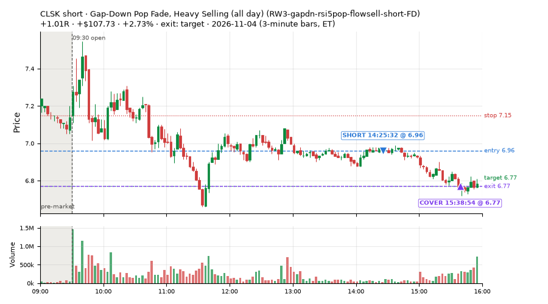
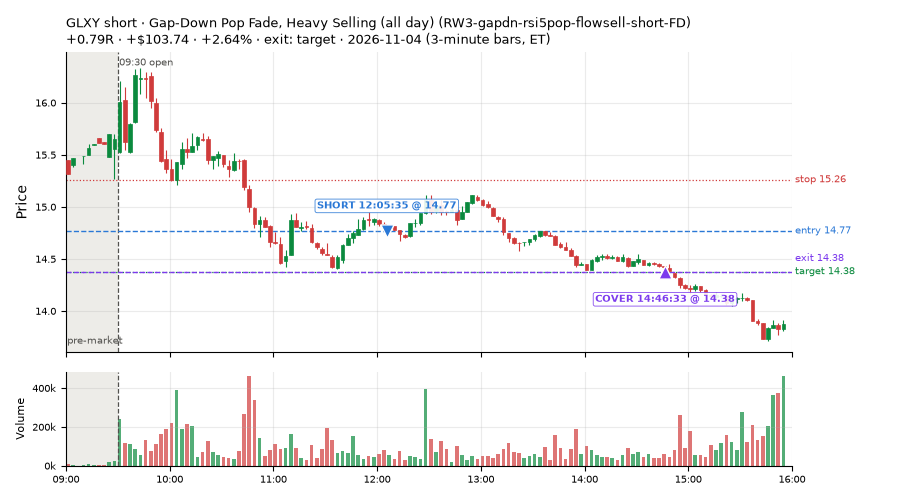
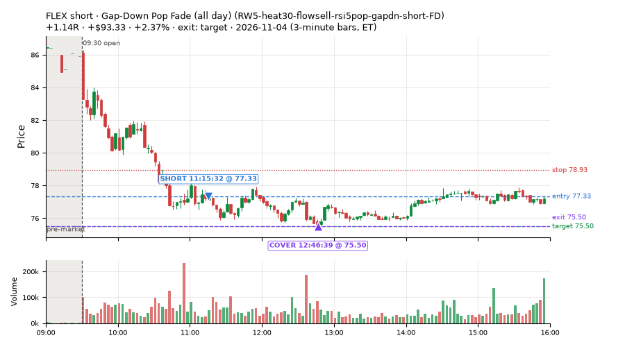
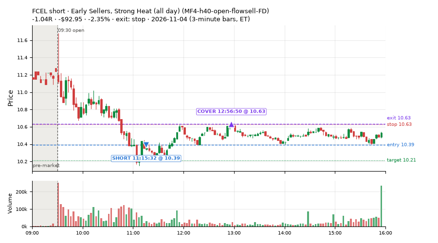
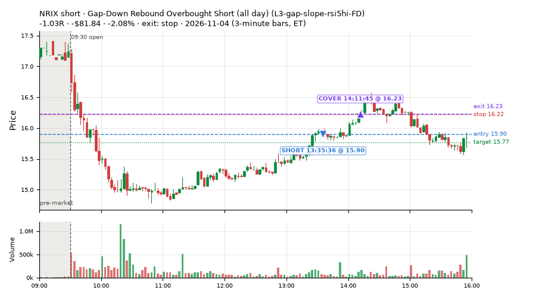
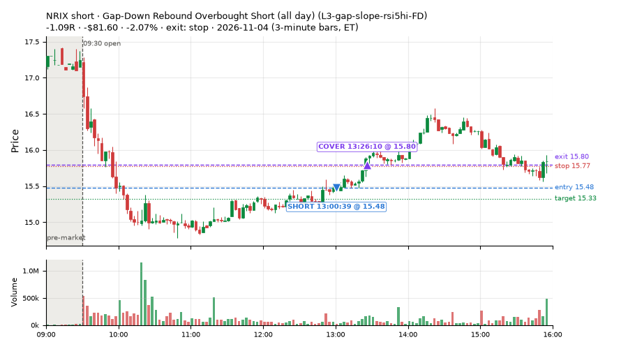
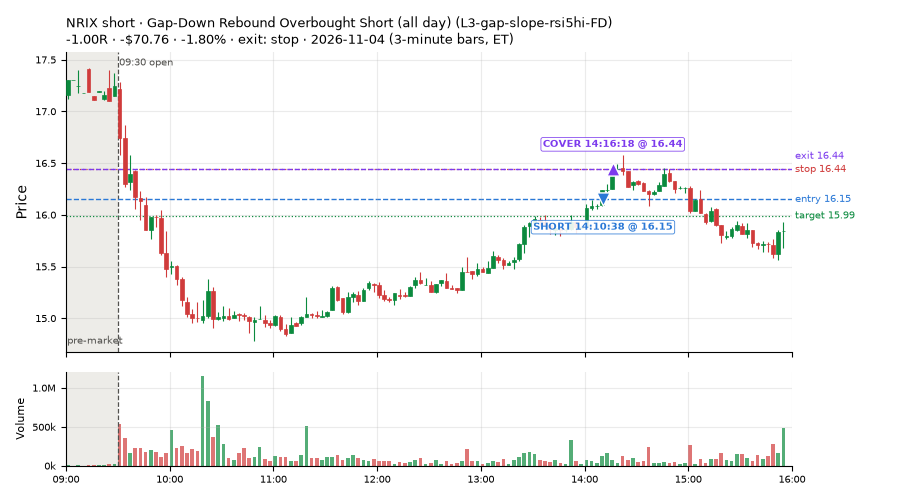
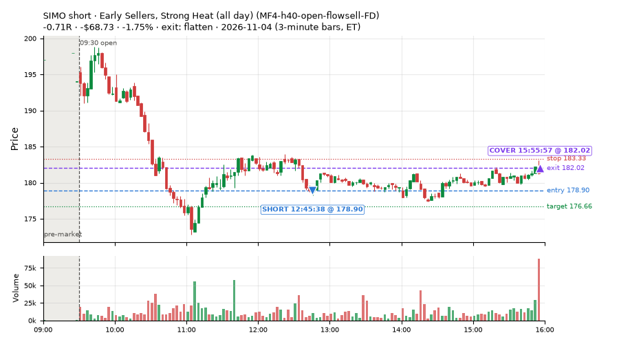

54 trades · win rate 48% · P/L $-141.37
PROBATION: no live setup has passed both locked test periods. 10 owner-directed setups added 2026-10-08 (MarcoFlow top 5 + 5 new), untested live. RW6G1 (RW6 + VWAP band guard) added 2026-10-09, probation.

| Symbol | Setup | Side | In | Out | Entry | Exit | Exit reason | % gained | P/L |
|---|---|---|---|---|---|---|---|---|---|
| CLSK | Gap-Down Pop Fade, Heavy Selling (all day) (RW3-gapdn-rsi5pop-flowsell-short-FD) | short | 14:25 | 15:38 | 6.96 | 6.77 | target | +2.73% | $107.73 |
| GLXY | Gap-Down Pop Fade, Heavy Selling (all day) (RW3-gapdn-rsi5pop-flowsell-short-FD) | short | 12:05 | 14:46 | 14.77 | 14.38 | target | +2.64% | $103.74 |
| FLEX | Gap-Down Pop Fade (all day) (RW5-heat30-flowsell-rsi5pop-gapdn-short-FD) | short | 11:15 | 12:46 | 77.33 | 75.50 | target | +2.37% | $93.33 |
| Symbol | Setup | Side | In | Out | Entry | Exit | Exit reason | % lost | P/L |
|---|---|---|---|---|---|---|---|---|---|
| FCEL | MF4-h40-open-flowsell-FD | short | 11:15 | 12:56 | 10.39 | 10.63 | stop | -2.35% | $-92.95 |
| NRIX | L3-gap-slope-rsi5hi-FD | short | 13:35 | 14:11 | 15.90 | 16.23 | stop | -2.08% | $-81.84 |
| NRIX | L3-gap-slope-rsi5hi-FD | short | 13:00 | 13:26 | 15.48 | 15.80 | stop | -2.07% | $-81.60 |
| NRIX | L3-gap-slope-rsi5hi-FD | short | 14:10 | 14:16 | 16.15 | 16.44 | stop | -1.80% | $-70.76 |
| SIMO | MF4-h40-open-flowsell-FD | short | 12:45 | 15:55 | 178.90 | 182.02 | flatten | -1.75% | $-68.73 |








Signal to fill: median 2s, 90th percentile 5s (54 trades). Bars close each minute; the order follows the bar close.
Best excursion (MFE): median 0.58R; worst (MAE) median 0.72R. 26% of trades never got +0.25R in our favour; 1 reached +1R and still closed at or below 0.
| Symbol | Setup | Best R | Worst R | Closed R |
|---|---|---|---|---|
| KEY | ST7-rsi50dn-long-pm-t1s1-FD | +1.00 | -1.05 | -1.00 |
| KLAC | MF2-open-rsimidhi-flowsell-FD | +0.71 | -1.07 | -1.11 |
| IP | MF2-open-rsimidhi-flowsell-FD | +0.65 | -1.31 | -1.15 |
| FNB | ST7-rsi50dn-long-pm-t1s1-FD | +0.61 | -1.12 | -1.12 |
| ORCL | L3-gap-slope-fromopen-FD | +0.56 | -1.21 | -1.10 |
| Entry time | Trades | Win | Avg R | P/L |
|---|---|---|---|---|
| 09:50-10:30 | 12 | 67% | -0.02 | $103.67 |
| 10:30-11:30 | 20 | 65% | +0.19 | $172.82 |
| 11:30-13:00 | 14 | 29% | -0.49 | $-174.47 |
| 13:00-14:00 | 5 | 0% | -0.99 | $-241.26 |
| 14:00-16:00 | 3 | 33% | -0.22 | $-2.13 |
| Setup | Trades | Win | Avg R | Adj R (net of SPY) | Avg R ex-market (all sessions) | P/L |
|---|---|---|---|---|---|---|
| Gap-Down Recovery Fade (all day) (L3-gap-slope-fromopen-FD) | 5.0 | 80% | +0.54 | +0.42 | -0.22 (beta -1.10, n 34) | $181.39 |
| Gap-Down Rebound Overbought Short (all day) (L3-gap-slope-rsi5hi-FD) | 4.0 | 25% | -0.67 | -0.68 | -0.36 (beta +2.56, n 9) | $-184.50 |
| Early Sellers, Mid-High RSI (all day) (MF2-open-rsimidhi-flowsell-FD) | 8.0 | 12% | -0.74 | -0.72 | +0.01 (beta -5.48, n 52) | $-211.62 |
| Early Sellers, Strong Heat (all day) (MF4-h40-open-flowsell-FD) | 12.0 | 50% | -0.33 | -0.51 | -0.18 (beta -1.69, n 60) | $-150.44 |
| Big Gainer Dip-and-Pop (NS1-rsidip-rsi5pop-long) owner-directed; holdouts once: Sep-Oct +0.326R n10, Apr-Jun +0.056R n119 | 2.0 | 50% | -0.30 | -0.37 | +0.01 (beta +0.53, n 14) | $-26.35 |
| Big Loser Flush Buy (NS5-sma50-flush-oversold-long) owner-directed; holdouts once: Sep-Oct -0.008R n73, Apr-Jun +0.002R n231 | 5.0 | 60% | -0.03 | -0.04 | +0.25 (beta +0.61, n 25) | $1.44 |
| Gap-Down Pop Fade, Heavy Selling (all day) (RW3-gapdn-rsi5pop-flowsell-short-FD) | 6.0 | 33% | -0.15 | -0.25 | +0.21 (beta -0.74, n 66) | $106.47 |
| Gap-Down Pop Fade (all day) (RW5-heat30-flowsell-rsi5pop-gapdn-short-FD) | 3.0 | 33% | -0.27 | -0.32 | +0.21 (beta -0.96, n 92) | $15.83 |
| RSI Collapse Dip Buy (all day) (ST7-rsi50dn-long-pm-t1s1-FD) | 9.0 | 78% | +0.39 | +0.54 | +0.18 (beta +0.46, n 19) | $126.41 |
Market direction (SPY, beta 1) accounted for $38.51 of today's $-141.37; the rest ($-179.88) came from the setups themselves. Avg R net of SPY: -0.21 (incl. a hedge leg's cost; report only).
10 setups live today. Today: 322 signals, 54 taken, 8 lost because another setup held the symbol (2%). Since 2026-10-06 (22 sessions): 2096 signals, 856 taken, 109 lost to other setups (5%). Peak open positions today 19 of 77 slots. Earnings blackout removed 1696 symbols before scanning.
Simulated playing time (not live): 1232 what-if trades of signals not taken, avg -0.12R, 50% winners; of them 109 lost to another setup (avg -0.07R).
Silent: intraday_momentum · Crowded out: MF4-h40-open-flowsell, MF3-open-flowsell-rsi5hi, MF5-flowsell-vwapup-rsi5hi · Starved: MF2-open-rsimidhi-flowsell
| Prio | Setup | Today sig / taken | Sessions | Signals / taken / trades | Taken/day | Expected/day | Lost to other setups | Lost to (setup n) | Top skip reasons | SIMULATED: not-taken n / avg R / win | Verdict |
|---|---|---|---|---|---|---|---|---|---|---|---|
| 1 | Gap-Down Pop Fade (all day) RW5-heat30-flowsell-rsi5pop-gapdn-short-FD | 7 / 3 | 14 | 118 / 92 / 92 | 6.57 | 12.79 | 0 | – | spread / quote / size 15, not shortable / shorts off 10, daily loss cap 1 | 26 / -0.14R / 42% | ok 32.9 entries/week |
| 2 | Gap-Down Pop Fade, Heavy Selling (all day) RW3-gapdn-rsi5pop-flowsell-short-FD | 10 / 6 | 14 | 111 / 66 / 66 | 4.71 | 13.59 | 1 | CWT14-failbrk-pdl-p10-lowvol-long 1 | not shortable / shorts off 18, daily loss cap 13, spread / quote / size 13 | 45 / +0.18R / 56% | ok 23.6 entries/week |
| 3 | Early Sellers, Mid-High RSI (all day) MF2-open-rsimidhi-flowsell-FD | 19 / 8 | 12 | 99 / 52 / 52 | 4.33 | 10.09 | 4 | RW5-heat30-flowsell-rsi5pop-gapdn-short-FD 4, RW3-gapdn-rsi5pop-flowsell-short-FD 4, MF2-open-rsimidhi-flowsell-FD 4 | not shortable / shorts off 23, spread / quote / size 15, daily loss cap 5 | 47 / -0.09R / 36% | ok 21.7 entries/week |
| 4 | Early Sellers, Strong Heat (all day) MF4-h40-open-flowsell-FD | 28 / 12 | 12 | 130 / 60 / 60 | 5.00 | 16.45 | 4 | RW5-heat30-flowsell-rsi5pop-gapdn-short-FD 4, RW3-gapdn-rsi5pop-flowsell-short-FD 4, MF2-open-rsimidhi-flowsell-FD 3 | not shortable / shorts off 36, spread / quote / size 24, daily loss cap 6 | 70 / +0.04R / 70% | ok 25.0 entries/week |
| 5 | RSI Collapse Dip Buy (all day) ST7-rsi50dn-long-pm-t1s1-FD | 14 / 9 | 8 | 29 / 19 / 19 | 2.38 | 2.17 | 0 | – | spread / quote / size 10 | 10 / +0.52R / 80% | slow 11.9 entries/week; ~5 weeks to 60 trades |
| 6 | Gap-Down Rebound Overbought Short (all day) L3-gap-slope-rsi5hi-FD | 38 / 4 | 4 | 161 / 9 / 9 | 2.25 | – | 2 | L3-gap-slope-fromopen-FD 2 | not shortable / shorts off 135, spread / quote / size 12, daily loss cap 3 | 148 / -0.20R / 55% | slow 11.2 entries/week; ~5 weeks to 60 trades |
| 7 | Gap-Down Recovery Fade (all day) L3-gap-slope-fromopen-FD | 180 / 5 | 6 | 592 / 34 / 34 | 5.67 | – | 14 | L3-gap-slope-fromopen-FD 14, L3-gap-slope-rsi5hi-FD 1 | not shortable / shorts off 497, daily loss cap 26, spread / quote / size 20 | 556 / -0.19R / 44% | ok 28.3 entries/week |
| 8 | Big Gainer Dip-and-Pop NS1-rsidip-rsi5pop-long | 3 / 2 | 20 | 18 / 14 / 14 | 0.70 | 0.92 | 0 | – | spread / quote / size 4 | 4 / +0.41R / 100% | slow 3.5 entries/week; ~17 weeks to 60 trades |
| 9 | Big Loser Flush Buy NS5-sma50-flush-oversold-long | 6 / 5 | 20 | 29 / 25 / 25 | 1.25 | 2.41 | 0 | – | spread / quote / size 4 | 4 / +0.71R / 100% | slow 6.2 entries/week; ~10 weeks to 60 trades |
| 10 | Early Sellers, Strong Heat MF4-h40-open-flowsell | 17 / 0 | 20 | 92 / 21 / 21 | 1.05 | 7.24 | 35 | MF4-h40-open-flowsell-FD 30, MF3-open-flowsell-rsi5hi-FD 4, MF3-open-flowsell-rsi5hi 3 | symbol held by another setup 35, spread / quote / size 20, not shortable / shorts off 16 | 71 / -0.06R / 63% | crowded-out 35 of 92 signals (38%) lost to setups already holding the symbol |
Every trade is attached as a CSV you can open and edit in Excel or Google Sheets. Live page: https://misiti15.github.io/MCF/live/